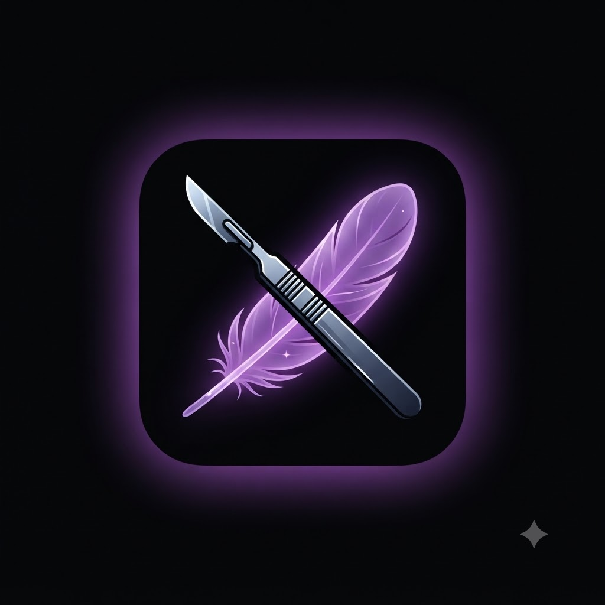

Production identity / Motion study 01
Loptr Lab cinematic title
Six seconds. Five existing project identities. Prepared for “Rapid Fire Regret,” a Suno track by IBLoud_IVXX; audio pending.




Loptr Lab
A Loptr Lab production
Static title frame. Motion plays only when requested.